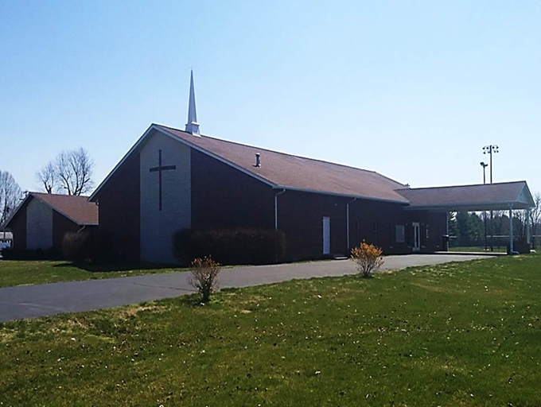

Contact Information
- Address: 50 Longacre Drive, Fairview Heights, IL
- Date & Time: August 6th and 7th
- Price of Admission - $25 per person
- 
What is the Line Up With the Word Conference?
Welcome to the Line Up With The World Conference. This is the first of many conferences as the years go on. As we go through life, there is a sense of power surrounding each and every one of us as God's children. We are all given special talents in order to empower the Kingdom and lead lost souls down the path of rightousness. Some are gifted with evangelism. Some have a greater affinity for prayer. And above all, some are gifted with the gift of spreading the gospel. These gifts are bestowed upon us in order to assist in our mission of guiding the masses to understanding.
This conference is a chance for us to come together as a congregation. This is a chance for us to bond and grow closer. There are also going to be established men and women attending in order to pass on their knowledge of the word. They will be ministering us and allowing us to come together in prayer and worship. As we pray together, we will assist in ushering each other into another level of reverence for our lord and savior. This is not only a chance to come together in fellowship, but also a chance to converse with followers of christ such as yourself. Our time at this conference will be filled with prayer, ministrering, and fellowship in order to strengthen our bonds. With enough encouragement from each other, we will make ourselves steadfast against the devil and his minions. With our collective power channeled through Jesus, we can combat that forces of evil and restore souls to their rightful path.